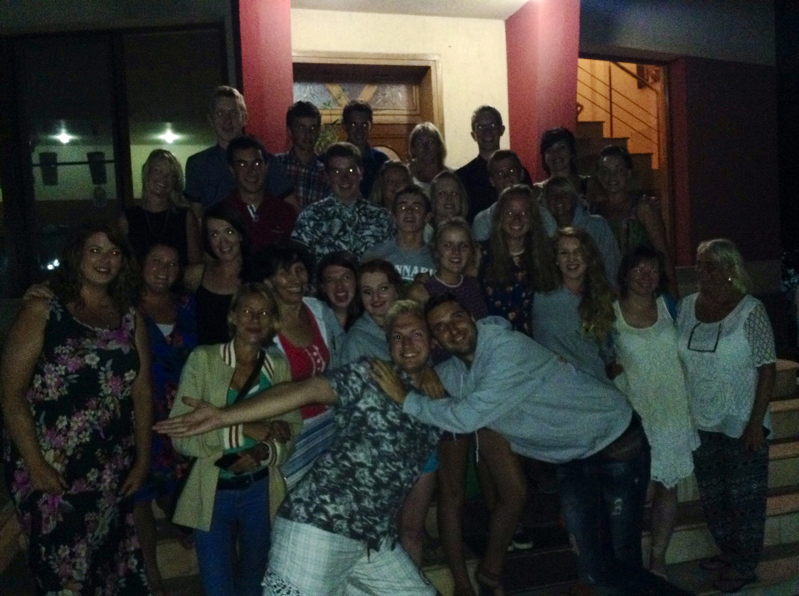

Mairie is a professionally qualified social worker currently working in the area of adult mental health specifically suicide intervention, and within the regional adoption service in the South. She also lectures in University College Cork where she is completing a Phd related to Attachment In Foster Care/Adoption. An experienced foster carer and adoptive parent herself, Mairie has been instrumental in the establishment of a number of foster care projects in Eastern Europe, primarily Romania since 1990. She founded the Aurelia Trust in 1994 to promote fostering in Eastern Europe as an alternative to the endemic institutional care. Mairie is also on the parent advisory board of the International Stillbirth Organisation.
Some of our volunteers over the years that have travelled to Romania to work
with the beneficiaries and fundraise for the charity.
